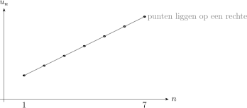
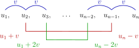
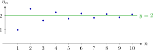
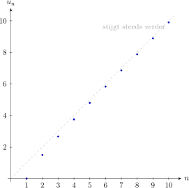

Hoofdstuk 11Rijen en convergentie
Leerplandoelstellingen (GO! Navigator)
Basisvorming (BV3_06)
-
• BV3_06.12 (MD 06.12) De leerlingen gebruiken rekenkundige en meetkundige rijen om patronen te beschrijven.
-
– afbakening: recursief voorschrift, formule voor de algemene term
-
– afbakening: formule voor de som van de eerste n termen
-
Gevorderde wiskunde (WD3_06.08)
-
• WD3_06.08.24 (MD 06.08.15) De leerlingen bepalen limieten van rijen.
-
– afbakening: convergentie
-
– afbakening: begrensde monotone rijen
-
-
• WD3_06.08.25.02 (MD 06.08.14) De leerlingen definiëren het limietbegrip op een formele manier.
Didactische uitwerking: definitie en notatie van rijen, RR en MR (algemene term, partiële som), harmonische rij, limietbegrip en standaardlimieten, convergentie, monotoniciteit, begrensdheid en het monotoon convergentiekenmerk.
I Rijen
1 Definitie
Een rij (of sequentie) is een afbeelding van \(\N _0\) naar \(\R \)
\[ u:\N _0 \to \R ,\qquad n \mapsto u_n=u(n). \]
Wij starten bij \(1\). Soms start men bij \(0\).
2 Notaties
Veelgebruikte notaties:
-
• \((u_n)\) of \((u_n)_{n\in \N }\) voor de volledige rij;
-
• \(u_1,u_2,u_3,\dots \) voor de eerste termen;
-
• \(u_i\) heet de \(i\)-de term van de rij;
-
• \(u_n\) voor de algemene term (als die bestaat).
3 Voorbeelden
-
• \(u_n = 2n+1\) geeft: \(3,5,7,9,\dots \)
-
• \(u_n = \dfrac {1}{n}\) geeft: \(1,\dfrac 12,\dfrac 13,\dfrac 14,\dots \)
-
• \(u_n = (-1)^n\) geeft: \(-1,1,-1,1,\dots \)
4 Expliciet voorschrift
Definitie Bij een expliciet voorschrift geef je \(u_n\) rechtstreeks als formule in \(n\).
\(\Rightarrow \) elke term meteen te berekenen door \(n\) te vervangen
Voorbeeld Stel \(u_n = 3n-2\). Dan vinden we:
-
• \(u_1 = 3 \cdot 1 - 2 = 1\)
-
• \(u_2 = 3 \cdot 2 - 2 = 4\)
-
• \(u_{20} = 3 \cdot 20 - 2 = 58\)
5 Recursief voorschrift
Bij een recursief voorschrift definieer je:
-
• een beginterm (of meerdere beginwaarden),
-
• een regel om van \(u_n\) naar \(u_{n+1}\) te gaan.
\[ u_1=10,\qquad u_{n+1}=u_n+3. \]
Dan: \(u_1=10\), \(u_2=13\), \(u_3=16\), \(\dots \)
6 GRM: TI-84 (mode SEQ)
-
• MODE FUNC SEQ
-
• Y=
-
– nMin=1
-
– u(n)=u(n-1)+3 alpha f4
-
– u(1)=10
-
-
• window
-
– nMin=0
-
– nmax=20
-
– Xmin=-1
-
– Xmax=20
-
– Ymin=-5
-
– Ymax=80
-
-
• graph of 2nd table
II Rekenkundige rijen (RR)
1 Definitie
Een rij \((u_n)\) heet rekenkundig als het verschil tussen twee opeenvolgende termen constant is:
\[ u_{n+1}-u_n = v \quad (\text {constant}). \]
Het getal \(v\) heet het verschil.
\[ \boxed {u_n = u_{n-1} + v} \quad \rightarrow \text {recursief voorschrift} \]
2 Voorbeelden
-
• \(4,7,10,13,\dots \) met \(v=3\)
-
• \(12,9,6,3,\dots \) met \(v=-3\)
-
• \(5,5,5,5,\dots \) met \(v=0\) (constante rij)
3 Algemene term
Als \(u_1\) en \(v\) gekend zijn:
\[ \begin {aligned} u_2 &= u_1 + v \\ u_3 &= u_2 + v = u_1 + 2v \\ u_4 &= u_3 + v = u_1 + 3v \\ &\vdots \\ u_n &= u_1 + (n-1)v \end {aligned} \]
\[ \boxed {u_n = u_1 + (n-1)v.} \quad \rightarrow \text {expliciet voorschrift} \]
Voorbeeld \(u_1=4\) en \(v=3\):
\[ u_n = 4+(n-1)\cdot 3 = 3n+1. \]
4 Gedrag van rij
-
• Als \(v>0\), dan stijgt de rij.
-
• Als \(v<0\), dan daalt de rij.
-
• Als \(v=0\), dan is de rij constant.
5 Grafische voorstelling
Je tekent de punten \((n,u_n)\).

6 Eigenschap 1: Rekenkundig gemiddelde
\[ \boxed { a,b,c \text { zijn drie opeenvolgende termen van RR} \iff b=\frac {a+c}{2} } \]
\(\seteqnumber{0}{}{0}\)\begin{gather*} a, b, c \text { zijn drie opeenvolgende termen van RR} \\ \Updownarrow \\ b = a + v \text { en } c = b + v \\ \Updownarrow \\ b - a = v \text { en } c - b = v \\ \Updownarrow \\ b - a = c - b \\ \Updownarrow \\ 2b = a + c \\ \Updownarrow \\ b = \frac {a + c}{2} \end{gather*}
Besluit In RR is elke term het rekenkundig gemiddelde van de twee termen die hem insluiten.
7 Eigenschap 2: Symmetrische sommen
\[ \boxed {u_1+u_n=u_2+u_{n-1}=u_3+u_{n-2}=\dots } \]
Schema:

Dus:
\[ \begin {aligned} u_2+u_{n-1} &= (u_1+v)+(u_n-v)=u_1+u_n,\\ u_3+u_{n-2} &= (u_1+2v)+(u_n-2v)=u_1+u_n,\\ &\vdots \end {aligned} \]
Voorbeeld:
\[ \text {RR: } \begin {array}{ccccccc} u_1 & u_2 & u_3 & u_4 & u_5 & u_6 & u_7 \\ \downarrow & \downarrow & \downarrow & \downarrow & \downarrow & \downarrow & \downarrow \\ 7 & 3 & -1 & -5 & -9 & -13 & -17 \end {array} \quad (n = 7) \]
| \(u_1 + u_7 = 7 - 17 = -10\) | \(u_3 + u_5 = -1 - 9 = -10\) |
| \(u_2 + u_6 = 3 - 13 = -10\) | \(u_4 + u_4 = -5 - 5 = -10\) |
Gevolg In RR zijn alle symmetrische sommen zijn gelijk.
8 Partiële som \(s_n\)
\(\seteqnumber{0}{}{0}\)\begin{equation*} \renewcommand {\arraystretch }{2} \begin{array}{r@{\;}c@{\quad }c@{\quad }c@{\quad }c@{\quad }c@{\quad }c@{\quad }c@{\quad }c} s_n & = & u_1 & + & u_2 & + & \dots & + & u_n \\ +\quad s_n & = & u_n & + & u_{n-1} & + & \dots & + & u_1 \\ \hline 2 \cdot s_n & = & \underbrace {(u_1 + u_n)}_{u_1 + u_n} & + & \underbrace {(u_2 + u_{n-1})}_{u_1 + u_n} & + & \dots & + & \underbrace {(u_n + u_1)}_{u_1 + u_n} \end {array} \end{equation*}
\(\seteqnumber{0}{}{0}\)\begin{align*} &\Leftrightarrow & 2 \cdot s_n &= n \cdot (u_1 + u_n) \\ &\Leftrightarrow & \Aboxed {s_n &= \frac {n \cdot (u_1 + u_n)}{2}} \end{align*}
9 Toepassingen
Voorbeeld 1: Lineaire groei
Je spaart elke maand €\(50\) extra dan de maand ervoor. Maand 1: €\(100\), maand 2: €\(150\), maand 3: €\(200\), \(\dots \)
-
(a) Soort rij?
\(\seteqnumber{0}{}{0}\)\begin{align*} &\text {Maand 1: }100,\ \text {maand 2: }150,\ \text {maand 3: }200,\dots \\ &\text {Verschillen: }150-100=50,\quad 200-150=50,\ \dots \end{align*}
\[\text {RR: } u_1=100 \qquad v=50\]
-
(b) Algemene term?
\(\seteqnumber{0}{}{0}\)\begin{align*} u_1&=100,\quad v=50\\ u_n&=u_1+(n-1)\,v \qquad \text {(algemene term rek. rij)}\\ u_n&=100+(n-1)\cdot 50\\ u_n&=100+50n-50\\ u_n&=50n+50 \end{align*}
\[ \boxed {u_n=100+50(n-1)=50n+50} \]
-
(c) Bedrag na 2 jaar?
Na 2 jaar zijn er \(24\) maanden, dus we zoeken \(u_{24}\).
\(\seteqnumber{0}{}{0}\)\begin{align*} u_{24}&=100+(24-1)\cdot 50\\ &=100+23\cdot 50\\ &=100+1150\\ &=1250 \end{align*}
\[ \boxed {u_{24}=1250} \]
Voorbeeld 2
Bepaal drie opeenvolgende termen van een rekenkundige rij als hun som \(s\) en hun product \(p\) respectievelijk 21 en 315 zijn.
\begin{align*} &\text {Neem drie opeenvolgende termen: }(a-d),\ a,\ (a+d).\\ &\text {Som: }(a-d)+a+(a+d)=3a=21 \;\Rightarrow \; a=7.\\[2mm] &\text {Product: }(a-d)\,a\,(a+d)=a(a^2-d^2)=315 \qquad \text {(merkwaardig product)}\\ &7(7^2-d^2)=315\\ &7(49-d^2)=315\\ &49-d^2=45\\ &d^2=4 \Rightarrow d=\pm 2. \end{align*}
\[ \Rightarrow \text { 2 oplossingen: } 5,7,9 \text { en } 9,7,5 \]
Voorbeeld 3
De som van de eerste \(n\) natuurlijke getallen verschillend van nul.
De rij \((u_n)\) met \(u_1=1\) en \(v=1\) is RR:
\[u_n=u_1+(n-1)v=1+(n-1)\cdot 1=n\]
Partiële somformule : \(s_n=\frac {n}{2}\bigl (u_1+u_n\bigr )\)
\(\seteqnumber{0}{}{0}\)\begin{align*} \Rightarrow s_n & =\frac {n}{2}(n+1) \\ & =\frac {n(n+1)}{2} \end{align*}
\[ \boxed {1+2+\cdots +n=\frac {n(n+1)}{2}} \]
10 Oefeningen
VBTL Analyse 1b: p20 nr 1, 2, 3, ...
III Meetkundige rijen (MR)
1 Definitie
Een rij \((u_n)\) heet meetkundig als elke term uit de vorige ontstaat door telkens met eenzelfde constant reëel getal \(q\) te vermenigvuldigen:
\[ \boxed {u_{n+1}=u_n \cdot q} \quad \rightarrow \text {recursief voorschrift} \]
Het getal \(q\) heet de reden.
De definitie via \(u_{n+1}=q\,u_n\) werkt altijd. De vaak gebruikte vorm
\[ \frac {u_{n+1}}{u_n}=q \]
kan enkel als \(u_n\neq 0\). Als ergens \(u_k=0\), dan volgt uit \(u_{k+1}=q\,u_k\) dat alle volgende termen ook \(0\) zijn.
2 Voorbeelden
Voorbeeld 1
\[ u_1=4,\qquad u_{n+1}=2u_n. \]
Dan:
\[ u_1=4,\; u_2=8,\; u_3=16,\; u_4=32,\;\dots \]
Nog voorbeelden
-
• \(3,6,12,24,\dots \) met \(q=2\)
-
• \(100,50,25,12.5,\dots \) met \(q=0.5\)
-
• \(-2,4,-8,16,\dots \) met \(q=-2\)
-
• \(5,5,5,5,\dots \) met \(q=1\) (constante rij)
3 Algemene term
Als \(u_1\) en \(q\) gekend zijn, dan kan je een expliciet voorschrift opbouwen:
\[ \begin {aligned} u_2 &= u_1\,q,\\ u_3 &= u_2\,q = (u_1\,q)\,q=u_1\,q^2,\\ u_4 &= u_3\,q = u_1\,q^3,\\ &\vdots \\ u_n &= u_1\,q^{n-1}. \end {aligned} \]
\[ \boxed {u_n=u_1\,q^{\,n-1}.} \quad \rightarrow \text {expliciet voorschrift} \]
Voorbeeld \(u_1=100\) en \(q=0.5\):
\[ u_n = 100\cdot (0.5)^{n-1}. \]
4 Gedrag van de rij
Het gedrag hangt vooral af van \(|q|\):
-
• Als \(0<q<1\), dan daalt de rij en nadert ze naar \(0\) (bij \(u_1>0\)).
-
• Als \(q>1\), dan groeit de rij in absolute waarde (bij \(u_1>0\) naar \(+\infty \)).
-
• Als \(-1<q<0\), dan wisselen de tekens af en gaan de termen naar \(0\).
-
• Als \(q\le -1\), dan wisselen de tekens af en worden de termen in absolute waarde groter (behalve \(u_1=0\)).
-
• Als \(q=1\), dan is de rij constant: \(u_n=u_1\).
-
• Als \(q=0\), dan: \(u_2=0\) en alle volgende termen ook \(0\).
5 Grafische voorstelling
Je tekent de punten \((n,u_n)\).
6 Eigenschap 1: Meetkundig gemiddelde
\[ \boxed { a,b,c \text { zijn drie opeenvolgende termen van MR} \iff b^2=ac } \]
\(\seteqnumber{0}{}{0}\)\begin{gather*} a,b,c \text { opeenvolgend in MR} \\ \Updownarrow \\ b=aq \text { en } c=bq \\ \Updownarrow \\ b=aq \text { en } c=(aq)q=aq^2 \\[1em] \Rightarrow \quad b^2=a^2q^2=a(aq^2)=ac. \end{gather*}
Gevolg Als bovendien \(a>0\) en \(c>0\), dan mag je ook schrijven:
\[ \boxed {b=\sqrt {ac}.} \]
7 Eigenschap 2: Symmetrische producten
\[ \boxed {u_1u_n=u_2u_{n-1}=u_3u_{n-2}=\dots } \]
Bewijs Gebruik \(u_k=u_1q^{k-1}\):
\[ u_k\,u_{n+1-k}=\bigl (u_1q^{k-1}\bigr )\bigl (u_1q^{n-k}\bigr ) = u_1^2 q^{(k-1)+(n-k)}=u_1^2q^{n-1}, \]
dus dit product is onafhankelijk van \(k\).
\[ \text {MR: } 2,\ 6,\ 18,\ 54,\ 162 \quad (q=3,\ n=5) \]
\[ u_1u_5=2\cdot 162=324,\qquad u_2u_4=6\cdot 54=324,\qquad u_3u_3=18\cdot 18=324. \]
8 Partiële som \(s_n\) MR
Voorwaarde: \(q \neq 1\)
\(\seteqnumber{0}{}{0}\)\begin{align*} s_n &= u_1 + u_2 + \dots + u_n && \text {(som eerste $n$ termen)}\\ q \cdot s_n &= q \cdot u_1 + q \cdot u_2 + \dots + q \cdot u_n && (\times q)\\ &= u_2 + u_3 + \dots + u_{n+1} && \text {(recursieve definitie)} \end{align*}
\(s_n - q \cdot s_n\):
\(\seteqnumber{0}{}{0}\)\begin{equation*} \renewcommand {\arraystretch }{2} \begin{array}{r@{\;}c@{\quad }c@{\quad }c@{\quad }c@{\quad }c@{\quad }c@{\quad }c@{\quad }c@{\quad }c@{\quad }c} s_n & = & u_1 & + & u_2 & + & \dots & + & u_n & \\ -\quad q \cdot s_n & = & & & u_2 & + & \dots & + & u_n & + & u_{n+1} \\ \hline (1 - q) \cdot s_n & = & u_1 & & & & & & & - & u_{n+1} \end {array} \end{equation*}
\(\seteqnumber{0}{}{0}\)\begin{align*} &\Rightarrow & (1 - q) \cdot s_n &= u_1 - u_{n+1} && (u_{n+1}=u_1 \cdot q^n)\\ &\Leftrightarrow & (1 - q) \cdot s_n &= u_1 - u_1 \cdot q^n\\ &\Leftrightarrow & (1 - q) \cdot s_n &= u_1 \cdot (1 - q^n)\\[1em] &\Leftrightarrow & \Aboxed {s_n &= u_1 \cdot \frac {1 - q^n}{1 - q}} && (q \neq 1) \end{align*}
\(\seteqnumber{0}{}{0}\)\begin{align*} & & (u_n) & = u_1, u_1, u_1, \dots , u_1, \dots \\ & & s_n & = \underbrace {u_1 + u_1 + \dots + u_1}_{n \text { termen}} \\ & & & = n \cdot u_1 \\ & \Rightarrow & \Aboxed {s_n & = n \cdot u_1} & & (q = 1) \end{align*}
9 Toepassingen
Voorbeeld 1: Samengestelde interest
Je zet €\(1000\) op een rekening met \(2\%\) groei per jaar.
-
(a) Welke rij is dit?
Elke periode wordt het bedrag vermenigvuldigd met \(1.02\).
\[ \text {MR met } u_1=1000,\quad q=1.02. \]
-
(b) Geef een formule voor \(u_n\).
\[ u_n=u_1q^{n-1}=1000\cdot 1.02^{n-1}. \]
-
(c) Hoeveel staat er na \(10\) jaar?
Na \(10\) jaar is dit \(u_{10}\):
\[ u_{10}=1000\cdot 1.02^{9}. \]
Voorbeeld 2: Afschrijving
Een laptop verliest elk jaar \(20\%\) van zijn waarde. De startwaarde is €\(1200\).
-
(a) Bepaal \(q\).
\(20\%\) verlies betekent vermenigvuldigen met \(0.80\).
\[ q=0.80. \]
-
(b) Geef \(u_n\).
\[ u_n=1200\cdot 0.80^{n-1}. \]
Voorbeeld 3
Bepaal drie opeenvolgende termen van een meetkundige rij waarvan het product \(p\) gelijk is aan 1000 en de kleinste term 2 is.
\begin{align*} &\text {Neem drie opeenvolgende termen van een meetkundige rij: }\frac {a}{q},\ a,\ aq \quad (q\neq 0).\\ &\text {Product: }\left (\frac {a}{q}\right )\cdot a\cdot (aq)=a^3=1000 \;\Rightarrow \; a=\sqrt [3]{1000}=10.\\ &\text {Dus de termen zijn } \frac {10}{q},\ 10,\ 10q.\\ &\text {De kleinste term is }2. \end{align*} Omdat bij drie opeenvolgende termen de middelste term \(10\) is, kan \(10\) niet de kleinste zijn. Dus moet de kleinste term een buitenste term zijn.
\(\seteqnumber{0}{}{0}\)\begin{align*} \text {(1) }\frac {10}{q}=2 &\Rightarrow q=5 \Rightarrow (2,10,50).\\ \text {(2) }10q=2 &\Rightarrow q=\frac {1}{5} \Rightarrow (50,10,2). \end{align*}
\[ \boxed {\text {drie opeenvolgende termen: } 2,10,50 \text { of } 50,10,2} \]
10 Oefeningen
VBTL Analyse 1b: p34 nr 1, 2, 3, …
IV Harmonische rijen
1 Definitie
De harmonische rij is:
\[ \boxed {u_n=\frac {1}{n}\qquad (n\ge 1).} \]
Algemener kom je ook rijen tegen van de vorm
\[ u_n=\frac {a}{b+cn}\qquad (a,b,c\in \R ,\ c\neq 0). \]
2 Voorbeelden
\[ 1,\ \frac 12,\ \frac 13,\ \frac 14,\ \frac 15,\ \dots \]
3 Grafische voorstelling
Let op: de harmonische rij \((\frac 1n)\) gaat over de termen zelf. De harmonische reeks \(\sum _{n=1}^{\infty }\frac 1n\) is iets anders.
V Limiet van een rij
1 Eindige limiet
Inleiding
Beschouw de rij
\[ u_n = 2 + \frac {(-1)^n}{n}. \]
De eerste termen zijn:
\[ u_1=1,\quad u_2=\frac 52,\quad u_3=\frac 53,\quad u_4=\frac 94,\quad u_5=\frac 95,\dots \]

Punten liggen afwisselend boven en onder de rechte \(y=2\) liggen, maar wel steeds dichter!
Afstand van \(u_n\) tot \(2\) is
\[ |u_n-2|=\left |\frac {(-1)^n}{n}\right |=\frac {1}{n}. \]
Op minder dan \(0.01\) van \(2\) We willen:
\[ |u_n-2|<0.01. \]
Omdat \(|u_n-2|=\frac 1n\), moeten we dus hebben:
\[ \frac 1n<0.01 \quad \Longleftrightarrow \quad n>100. \]
We mogen bijvoorbeeld \(n=101\) kiezen. Dan:
\[ u_{101}=2+\frac {(-1)^{101}}{101}=2-\frac 1{101}, \]
en dus
\[ |u_{101}-2|=\frac 1{101}<0.01. \]
Op minder dan \(0.0005\) van \(2\) Nu willen we:
\[ |u_n-2|<0.0005. \]
Dus:
\[ \frac 1n<0.0005 \quad \Longleftrightarrow \quad n>2000. \]
We mogen bijvoorbeeld \(n=2001\) kiezen. Dan:
\[ u_{2001}=2-\frac 1{2001}, \]
en dus
\[ |u_{2001}-2|=\frac 1{2001}<0.0005. \]
Algemeen idee Willen we dat de afstand tussen \(u_n\) en \(2\) kleiner is dan een willekeurig positief getal \(\varepsilon \), dan moeten we gewoon zorgen dat
\[ \frac 1n<\varepsilon . \]
Dat kan altijd door \(n\) groot genoeg te kiezen, bijvoorbeeld met
\[ n>\frac 1\varepsilon . \]
Met andere woorden: voor elke foutmarge \(\varepsilon >0\) kunnen we een index \(N\) vinden zodat voor alle \(n\ge N\) geldt:
\[ |u_n-2|<\varepsilon . \]
Dit is precies het idee van
\[ \lim _{n\to \infty } u_n = 2. \]
Definitie (eindige limiet)
We zeggen dat \((u_n)\) een limiet \(L\in \R \) heeft als \(u_n\) willekeurig dicht bij \(L\) komt voor grote \(n\).
Formeler:
\[ \lim _{n\to \infty }u_n=L \]
betekent:
Voor elke foutmarge \(\varepsilon >0\) bestaat er een \(N\) zodat voor alle \(n\ge N\) geldt:
\[ |u_n-L|<\varepsilon . \]
Nog voorbeelden
-
• \(\displaystyle \lim _{n\to \infty }\frac {1}{n}=0\).
-
• \(\displaystyle \lim _{n\to \infty }\frac {3n-1}{n+2} =\lim _{n\to \infty }\frac {3-\frac 1n}{1+\frac 2n}=3.\)
-
• \(u_n=(-1)^n\) heeft geen limiet (blijft wisselen).
2 Oneindige limiet
Inleiding
Beschouw de rij
\[ u_n = n-\frac {1}{n}. \]
De eerste termen zijn:
\[ u_1=0,\quad u_2=\frac 32,\quad u_3=\frac 83,\quad u_4=\frac {15}{4},\quad u_5=\frac {24}{5},\dots \]

We zien in de grafiek dat de punten steeds hoger komen te liggen. De rij lijkt dus zonder bovengrens te groeien.
Dat kunnen we ook algebraïsch aantonen:
\[ u_n=n-\frac 1n. \]
Boven \(10\) komen We willen een index vinden zodat alle termen vanaf daar groter zijn dan \(10\).
Nu geldt voor \(n\ge 1\):
\[ u_n=n-\frac 1n > n-1. \]
Dus het volstaat dat
\[ n-1>10. \]
Dat is waar zodra
\[ n>11. \]
We mogen dus bijvoorbeeld \(N=12\) nemen. Dan geldt voor alle \(n\ge 12\):
\[ u_n=n-\frac 1n>n-1\ge 11>10. \]
Boven \(1000\) komen Op dezelfde manier willen we:
\[ u_n>1000. \]
Omdat opnieuw
\[ u_n>n-1, \]
volstaat het dat
\[ n-1>1000. \]
Dat is waar zodra
\[ n>1001. \]
We mogen dus bijvoorbeeld \(N=1002\) nemen. Dan geldt voor alle \(n\ge 1002\):
\[ u_n=n-\frac 1n>n-1\ge 1001>1000. \]
Algemeen idee Willen we dat de termen uiteindelijk groter zijn dan een willekeurig reëel getal \(M\), dan moeten we gewoon zorgen dat
\[ n-1>M. \]
Dat kan altijd door \(n\) groot genoeg te kiezen, bijvoorbeeld met
\[ N>M+1. \]
Dan geldt voor alle \(n\ge N\):
\[ u_n=n-\frac 1n>n-1\ge N-1>M. \]
Met andere woorden: voor elke grens \(M\) kunnen we een index \(N\) vinden zodat voor alle \(n\ge N\) geldt:
\[ u_n>M. \]
Dit is precies het idee van
\[ \lim _{n\to \infty } u_n=+\infty . \]
Definitie
\[ \lim _{n\to \infty }u_n=+\infty \]
betekent:
Voor elk getal \(M\) bestaat er een \(N\) zodat voor alle \(n\ge N\) geldt: \(u_n>M\).
Analoog definieer je \(\lim u_n=-\infty \).
3 Oefeningen
VBTL Analyse 2: p30 nr 10,11,12
4 Standaard limieten
-
• \(\displaystyle \lim _{n\to \infty }\frac {1}{n}=0\)
Bewijs.
Neem \(\varepsilon >0\). Kies een natuurlijk getal \(N>\frac {1}{\varepsilon }\). Dan geldt voor alle \(n\geq N\):
\[ \left |\frac 1n-0\right |=\frac 1n\leq \frac 1N<\varepsilon . \]
Dus:
\[ \lim _{n\to \infty }\frac 1n=0. \]
• \(\displaystyle \lim _{n\to \infty }\frac {1}{n^2}=0\)
• \(\displaystyle \lim _{n\to \infty }\frac {1}{n^3}=0\)
• Meer algemeen: voor elke natuurlijke macht \(p\geq 1\) geldt
\[ \lim _{n\to \infty }\frac {1}{n^p}=0 \]
• \(\displaystyle \lim _{n\to \infty }n^2=+\infty \)
Bewijs.
Neem \(M\in \R \) willekeurig. Kies een natuurlijk getal \(N>\sqrt {M}\). Dan geldt voor alle \(n\geq N\):
\[ n>\sqrt {M} \quad \Rightarrow \quad n^2>M. \]
Dus voor elke grens \(M\) bestaat er een \(N\) zodat voor alle \(n\geq N\) geldt \(n^2>M\).
Daarom:
\[ \lim _{n\to \infty } n^2=+\infty . \]
• \(\displaystyle \lim _{n\to \infty }n^3=+\infty \)
• Meer algemeen: voor elke natuurlijke macht \(p\geq 1\) geldt
\[ \lim _{n\to \infty }n^p=+\infty \]
• \(\displaystyle \lim _{n\to \infty }\sqrt {n}=+\infty \)
• \(\displaystyle \lim _{n\to \infty }\sqrt [3]{n}=+\infty \)
• Meer algemeen: voor elke natuurlijke macht \(p\geq 1\) geldt
\[ \lim _{n\to \infty }\sqrt [p]{n}=+\infty \]
• \(\displaystyle \lim _{n\to \infty }\frac {1}{\sqrt {n}}=0\)
• \(\displaystyle \lim _{n\to \infty }\frac {1}{\sqrt [3]{n}}=0\)
• Meer algemeen: voor elke natuurlijke macht \(p\geq 1\) geldt
\[ \lim _{n\to \infty }\frac {1}{\sqrt [p]{n}}=0 \]
• Als \(|q|<1\), dan
\[ \lim _{n\to \infty }q^n=0 \]
• Als \(q>1\), dan
\[ \lim _{n\to \infty }q^n=+\infty \]
• Als \(q=1\), dan
\[ \lim _{n\to \infty }q^n=1 \]
• Als \(q=-1\), dan heeft \((q^n)\) geen limiet.
• Als \(q<-1\), dan heeft \((q^n)\) geen limiet.
• Voor elke constante \(c\in \R \) geldt
\[ \lim _{n\to \infty }c=c \]
5 Rekenregels voor eindige limieten
Als \(\lim \limits _{n\to \infty } u_n\) en \(\lim \limits _{n\to \infty } v_n\) bestaan, dan geldt:
-
• \(\displaystyle \lim _{n\to \infty }(u_n+v_n)=\lim _{n\to \infty }u_n+\lim _{n\to \infty }v_n\)
-
• \(\displaystyle \lim _{n\to \infty }(u_n-v_n)=\lim _{n\to \infty }u_n-\lim _{n\to \infty }v_n\)
-
• \(\displaystyle \lim _{n\to \infty }(u_n\cdot v_n)=\left (\lim _{n\to \infty }u_n\right )\cdot \left (\lim _{n\to \infty }v_n\right )\)
-
• \(\displaystyle \lim _{n\to \infty }\left (\frac {u_n}{v_n}\right )=\frac {\lim _{n\to \infty }u_n}{\lim _{n\to \infty }v_n}\), als \(\displaystyle \lim _{n\to \infty }v_n\neq 0\)
6 Rekenregels voor oneindige limieten
Enkele rekenregels
-
• Als \(\lim _{n\to \infty } u_n=+\infty \quad \text {en} \quad (v_n) \text { begrensd is,} \) dan
\[ \lim _{n\to \infty }(u_n+v_n)=+\infty . \]
-
• Als \(\lim _{n\to \infty } u_n=+\infty \quad \text {en} \quad \lim _{n\to \infty } v_n=+\infty , \) dan
\[ \lim _{n\to \infty }(u_n+v_n)=+\infty . \]
-
• Opgelet: Vormen zoals \(\lim _{n\to \infty } u_n=+\infty \quad \text {en} \quad \lim _{n\to \infty } v_n=+\infty \) geven voor
\[ \lim _{n\to \infty }(u_n-v_n) \]
een onbepaalde vorm.
Symbolisch
|
\[ \begin {aligned} (+\infty )+(+\infty )&=+\infty \\ (-\infty )+(-\infty )&=-\infty \\[0.5em] (+\infty )\cdot (+\infty )&=+\infty \\ (+\infty )\cdot (-\infty )&=-\infty \\ (-\infty )\cdot (-\infty )&=+\infty \\[0.5em] x+(+\infty )&=+\infty \qquad (x\in \R )\\ x+(-\infty )&=-\infty \qquad (x\in \R )\\[0.5em] x\cdot (+\infty )&=+\infty \qquad (x>0)\\ x\cdot (-\infty )&=-\infty \qquad (x>0) \end {aligned} \] |
\[ \begin {aligned} x\cdot (+\infty )&=-\infty \qquad (x<0)\\ x\cdot (-\infty )&=+\infty \qquad (x<0)\\[0.5em] \frac {x}{+\infty }&=0 \qquad (x\in \R )\\ \frac {x}{-\infty }&=0 \qquad (x\in \R )\\[0.5em] \sqrt [p]{+\infty }&=+\infty \qquad (p\in \N ,\ p\geq 1)\\ \sqrt [p]{-\infty }&=-\infty \qquad (p \text { oneven})\\[0.5em] (+\infty )^p&=+\infty \qquad (p\in \N ,\ p\geq 1)\\ (-\infty )^p&=+\infty \qquad (p \text { even})\\ (-\infty )^p&=-\infty \qquad (p \text { oneven}) \end {aligned} \] |
Voorlopig Onbepaalde Vormen (VOV)
\[ \frac {0}{0},\qquad \frac {\infty }{\infty },\qquad \infty -\infty ,\qquad 0\cdot \infty ,\qquad 1^\infty ,\qquad 0^0,\qquad \infty ^0 \]
We onderzoeken vier limieten van het type \((+\infty )-(+\infty )\).
-
•
\[ \lim _{n\to +\infty }(n-n)=0 \]
-
•
\[ \lim _{n\to +\infty }(n^3-n^2) =\lim _{n\to +\infty } n^3\left (1-\frac {1}{n}\right ) =\lim _{n\to +\infty } n^3 =+\infty \]
(\(n^3\) holt veel sneller naar \(+\infty \) dan \(n^2\))
-
•
\[ \lim _{n\to +\infty }(n^3-n^5) =\lim _{n\to +\infty } n^5\left (\frac {1}{n^2}-1\right ) =-\lim _{n\to +\infty } n^5 =-\infty \]
-
•
\[ \lim _{n\to +\infty }\bigl [n^2-(1+n^2)\bigr ]=-1 \]
7 Oefeningen
VBTL Analyse 2: p30 nr14!
VI Convergentie van rijen
1 Definitie
Een rij heet convergent als ze een eindige limiet heeft. Anders heet ze divergent.
2 Uniciteit van de limiet
Een convergente rij heeft hoogstens één limiet.
Bewijs.
Stel dat \(\lim u_n = L\) en ook \(\lim u_n = M\). Neem \(\varepsilon >0\).
Dan bestaat er \(N_1\) zodat voor \(n\ge N_1\) geldt \(|u_n-L|<\varepsilon /2\), en er bestaat \(N_2\) zodat voor \(n\ge N_2\) geldt \(|u_n-M|<\varepsilon /2\).
Voor \(n\ge \max (N_1,N_2)\):
\[ |L-M|\le |L-u_n|+|u_n-M|<\frac {\varepsilon }{2}+\frac {\varepsilon }{2}=\varepsilon . \]
Omdat dit voor elke \(\varepsilon >0\) kan, moet \(|L-M|=0\) en dus \(L=M\).
3 Ongelijkheid van Bernoulli
Voor elke \(x>-1\) en elk \(n\in \N \) geldt:
\[ \boxed {(1+x)^n \ge 1+nx.} \]
Bewijs.
We bewijzen dit met inductie.
Start: voor \(n=1\) is \((1+x)^1=1+x=1+1\cdot x\).
Stap: stel dat \((1+x)^n\ge 1+nx\). Dan:
\[ (1+x)^{n+1}=(1+x)^n(1+x)\ge (1+nx)(1+x)=1+(n+1)x+nx^2\ge 1+(n+1)x, \]
want \(nx^2\ge 0\). Dus geldt de ongelijkheid ook voor \(n+1\).
4 Limiet van de rij \(u_n=a^n\)
Beschouw \(u_n=a^n\).
-
• Als \(|a|<1\), dan \(a^n\to 0\).
-
• Als \(a=1\), dan \(a^n\to 1\).
-
• Als \(a=-1\), dan is er geen limiet.
-
• Als \(a>1\), dan \(a^n\to +\infty \).
-
• Als \(a<-1\), dan groeit \(|a|^n\to +\infty \) en de tekens wisselen, dus geen limiet.
5 Convergentie van rekenkundige rijen
Voor \(u_n=u_1+(n-1)v\):
-
• Als \(v=0\), dan is de rij constant en dus convergent.
-
• Als \(v>0\), dan \(u_n\to +\infty \).
-
• Als \(v<0\), dan \(u_n\to -\infty \).
6 Convergentie van meetkundige rijen
Voor \(u_n=u_1q^{n-1}\):
-
• Als \(|q|<1\), dan \(u_n\to 0\).
-
• Als \(q=1\), dan is de rij constant: \(u_n=u_1\).
-
• Als \(q=-1\), dan is er geen limiet (wisselende tekens).
-
• Als \(|q|>1\), dan groeit \(|u_n|\to +\infty \) (dus divergent).
7 Convergentie van harmonische rijen
Voor \(u_n=\dfrac {1}{n}\):
\[ \boxed {\lim _{n\to \infty }\frac {1}{n}=0,} \]
dus de harmonische rij is convergent.
8 Monotone rijen
-
• \((u_n)\) is stijgend als \(u_{n+1}\ge u_n\) voor alle \(n\).
-
• \((u_n)\) is dalend als \(u_{n+1}\le u_n\) voor alle \(n\).
-
• Een rij heet monotoon als ze stijgend of dalend is.
9 Begrensde rijen
-
• \((u_n)\) is begrensd boven als er een \(M\) bestaat met \(u_n\le M\) voor alle \(n\).
-
• \((u_n)\) is begrensd onder als er een \(m\) bestaat met \(u_n\ge m\) voor alle \(n\).
-
• \((u_n)\) is begrensd als ze begrensd boven en onder is.
10 Convergentiekenmerk voor monotone rijen
Stelling (monotoon convergentiekenmerk).
Elke monotone en begrensde rij is convergent.
Intuïtie: een stijgende rij die nooit boven een plafond komt, moet ergens “uitvlakken” en naar een grenswaarde gaan.
11 Voorbeeld met recursie (monotoon en begrensd)
Gegeven:
\[ u_1=0,\qquad u_{n+1}=\frac {u_n+2}{2}. \]
-
• Begrensd boven: we tonen aan dat \(u_n\le 2\) voor alle \(n\). Als \(u_n\le 2\), dan
\[ u_{n+1}=\frac {u_n+2}{2}\le \frac {2+2}{2}=2. \]
En \(u_1=0\le 2\), dus inductie geeft \(u_n\le 2\).
-
• Stijgend:
\[ u_{n+1}-u_n=\frac {u_n+2}{2}-u_n=\frac {2-u_n}{2}\ge 0 \]
omdat \(u_n\le 2\).
Dus \((u_n)\) is stijgend en begrensd, en daarom convergent.
Als \(u_n\to L\), dan moet (door de rekenregels) ook \(u_{n+1}\to L\) en dus:
\[ L=\frac {L+2}{2}\quad \Rightarrow \quad 2L=L+2\quad \Rightarrow \quad L=2. \]
Dus \(\lim u_n = 2\).
12 Oefeningen
Oefening 1
Bepaal (als die bestaat) de limiet:
-
1. \(u_n=\dfrac {5n+1}{2n-3}\)
-
2. \(u_n=0.8^{\,n}\)
-
3. \(u_n=(-2)^n\)
Oefening 2
Onderzoek of de rij convergent is. Motiveer.
\[ u_1=10,\qquad u_{n+1}=0.6\,u_n. \]
Geef ook de limiet.
Oefening 3
Toon aan dat de rij
\[ u_n = 1-\frac {1}{n} \]
monotoon is en begrensd. Besluit dat ze convergent is en bepaal de limiet.